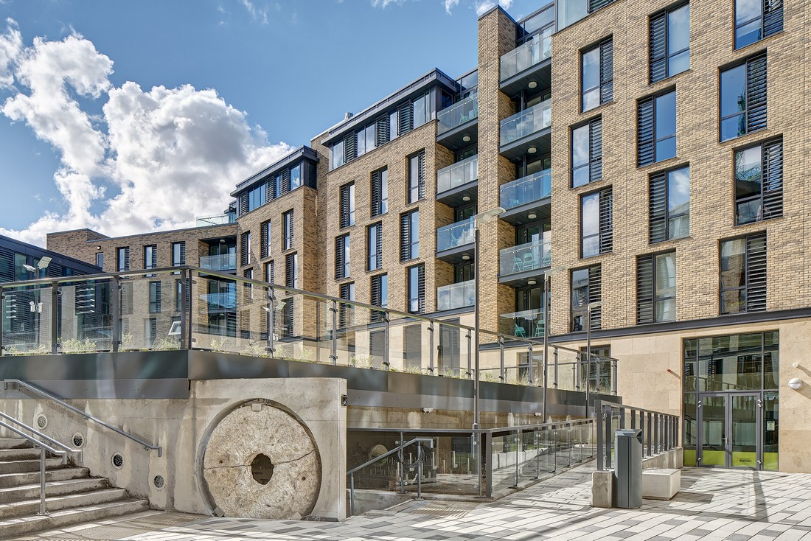
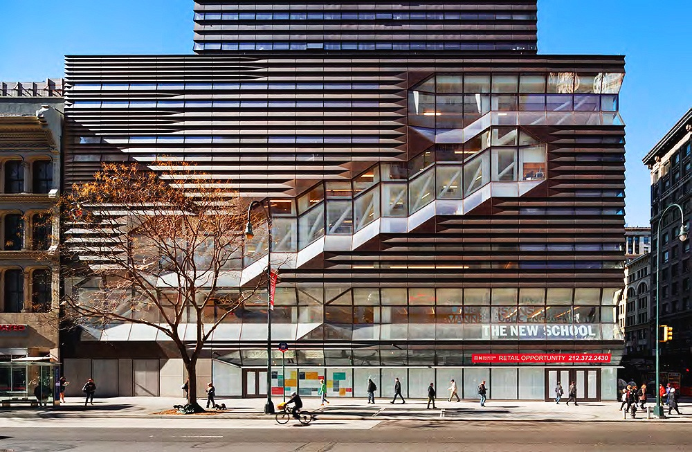
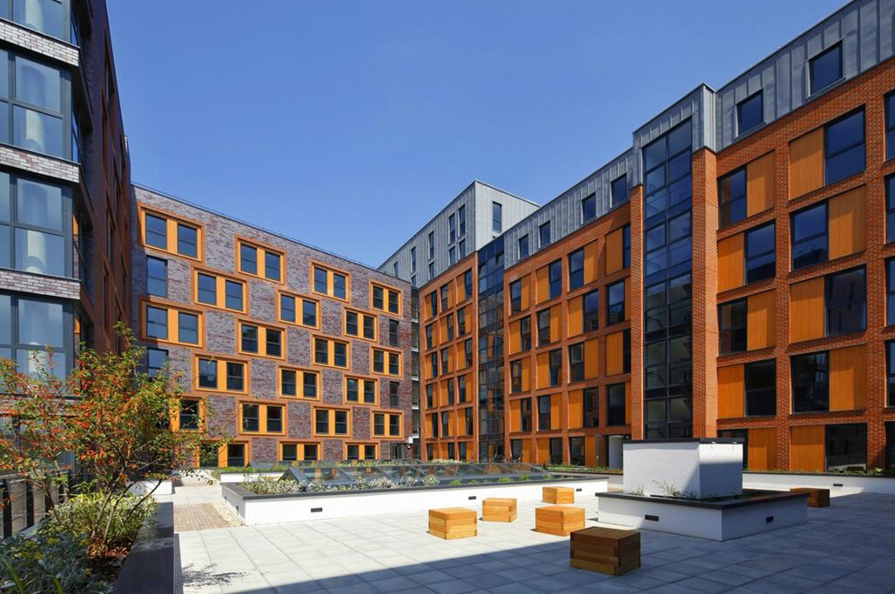
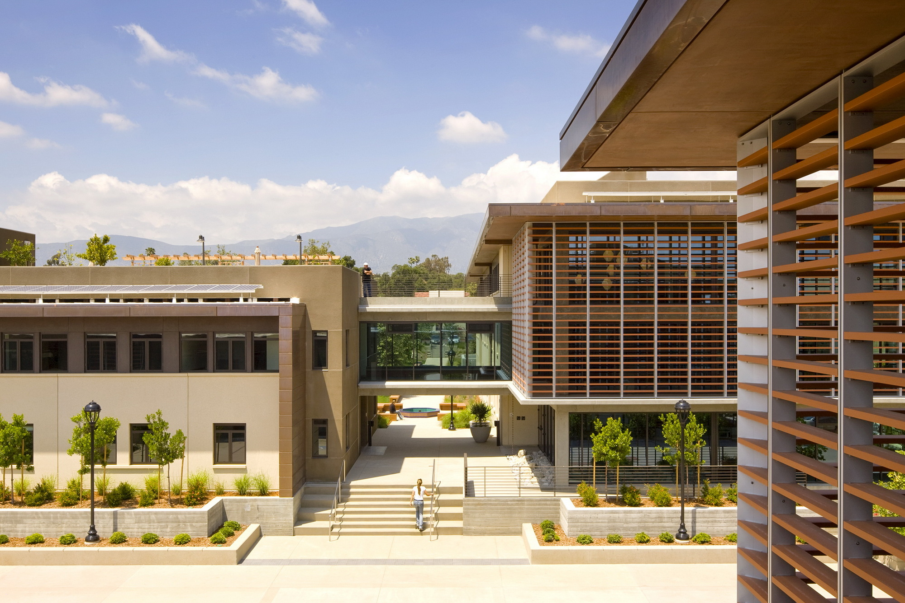

Dublin is a vibrant hub of culture and education making it the perfect place to study. With our most accessible residence
to choose from in the city, we are sure we can find the perfect student room for you.
New Mills located near the old Heinikin
brewery in Dublin 2, now with over 300 bedrooms and en-suites,students will be able to enjoy a more wholesome and social college life.
Kildare

Ardcairn House is located in Maynooth suburb of Kildare so it is perfect for those studying at the Maynooth University which is
just a 2-minute walk away. You will also be ideally situated just a 5-minute stroll from the new Maynooth LUAS Stop, handy!
This accomodation boast 200 student rooms, 100 for sharing and 100 for single person use. Aswell as bedrooms this site also contains
an underground swimming pool, one of only sites to have this facility!
Galway

Broadstone Hall is a modern student residence in the northern part of central Galway, putting you right in the middle of the excitement.
Shops, museums, pubs, bars and restaurants are all nearby and the citys colleges and universities are easily reachable (either on foot or by bus).
The apartments in Broadstone Hall are all shared, ranging from three to seven bedrooms in each one.
Cork

Conveniently located on the corner of Gardiner Street and Summerhill, this beautiful new- build boasts 491 beds for students looking for a high-spec home in the
heart of the city. Kavanagh Court is just a stones throw away from Corks O Connell Street, home to some of the best restaurants, bars, cinemas and shops in
the area, so you will never run out of things to do!
The seven-storey residence is comprised of 88 self-catering apartments, meaning there are plenty of
opportunities to socialise and meet new people.